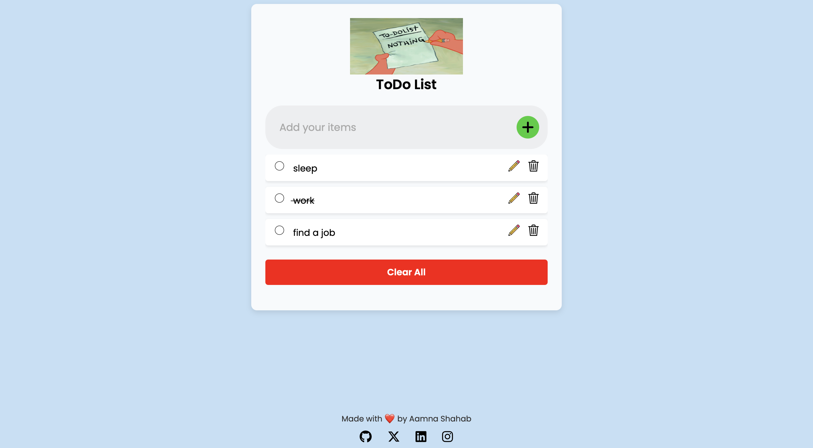
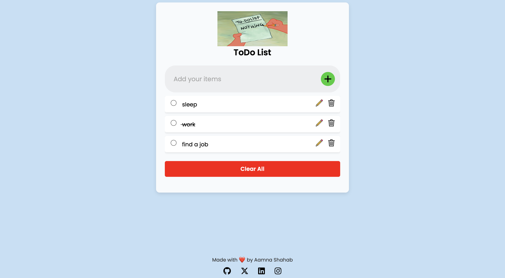

Aamna Shahab
Creative Developer & Tester
My Portfolio


 

About
I am a Creative Developer and Tester with a
passion for creating innovative and user-friendly web applications.
Currently based in Saarbrücken, Germany, I hold a Master's in Computer Science and have gained
significant professional experience, particularly in Web Development and Automation Testing.
I specialize in building responsive websites, optimizing user interfaces, and implementing solutions
that enhance user experience. With expertise in a wide range of tools and programming
languages, including HTML5, CSS3, JavaScript, TypeScript, MySQL, and AWS,
I am dedicated to staying ahead of the curve in this ever-evolving tech landscape.
In addition to my technical skills, I am proficient in design tools like Figma, Canva and Photoshop,
which allow me to create both functional and visually appealing websites. As a photography enthusiast,
I enjoy capturing moments through my lens, which further enhances my creative approach. You can explore
my photography on Instagram at @shutterbug_aamna
Over the years, I’ve contributed to various projects, including e-commerce websites,
translations services website, food delivery Android applications and automation testing frameworks. My goal is to combine technical
expertise with creative solutions to deliver high-quality, scalable, and efficient web applications that meet user needs.
I am always looking for opportunities to collaborate with innovative teams and work on projects that challenge me to grow and refine my skills.
My Skills
Programming
Web Development
Automation Testing
Partners
Projects Done
Happy Clients
Meetings
What some of my clients have to say..
I had the pleasure of working with Aamna on two major projects: Uchobali.com my e-commerce store and Alexandrossbnb.com. Aamna was incredibly efficient in syncing all of our bookings across the platforms like expedia, booking, airbnb, website and resolving some of the most challenging technical issues we faced. Her attention to detail, quick problem-solving, and dedication to ensuring everything ran smoothly made a huge difference. Thanks to her work, our systems are more streamlined, and we can focus on growing our business with peace of mind.
Satisfied Client, Mexico
Working with Aamna was a game-changer for our business. She built our translation agency website, rtllanguagesolutions.com from the ground up. Aamna's expertise in web development, attention to detail, and seamless integration of all our services helped us streamline our processes. The website now not only represents our services in a professional and user-friendly way but has also significantly improved our client engagement. Her dedication, efficiency, and technical skills have been invaluable to us.
Satisfied Client, India